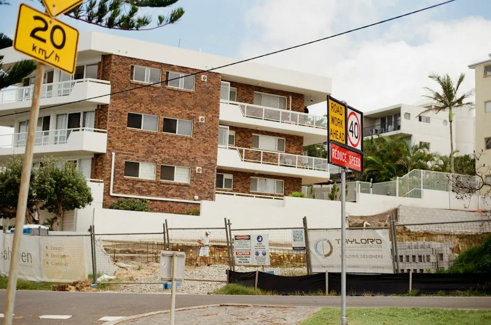

The right retaining wall depends on the ground being held, the garden use, access, drainage and anything above the wall. Boulder, sandstone, concrete sleeper and timber sleeper systems each suit different site conditions. Replacement work may also include removing the old wall, drainage and garden repairs. Before requesting a firm quote, prepare wider site photos, approximate dimensions, access details, nearby structures and the result you want.
For homeowners comparing retaining walls brisbane options, the practical decision is how the wall will manage the ground, water, access and garden use over the life of the project.
Retaining Walls Brisbane Explained
Boulder Walls Brisbane describes the project around the change in levels and the way the garden needs to work, rather than choosing a material from a front-face price alone. A raised garden bed, a level lawn, an old leaning wall and a garden that drops away can require different conversations.
Begin by describing whether you need a new level, a replacement or a more usable yard. Mention the approximate height change, what sits above the wall and whether a driveway, path, fence or another structure is nearby. These details help a contractor understand the job before a final wall system has been selected.
- Explain the result you want from the space.
- Show the higher ground and the area below it.
- Identify planting, lawn, paths and fencing you want to retain.
- Note anything that may restrict material movement.
Compare materials by site fit
Natural boulders can suit a planted garden where an irregular rock appearance is wanted and there is room to place larger stones. Sandstone blocks provide either even rows or a rougher stone finish, planned around the garden levels. Concrete sleepers sit between posts, so the posts and drainage need to suit the system.
Timber sleepers create a different garden edge and should be considered with the ground, drainage and future care in mind. The choice should follow the site and intended use, not simply the visible face of the wall. For another perspective on planning a retaining project, see this retaining wall planning guide.
Drainage, approvals and existing walls
Water behind a wall needs to be considered in its design. The wall system, ground conditions and a lawful outlet all affect the drainage discussion. Gaps between stones do not by themselves demonstrate that drainage is adequate, so ask exactly what drainage is included in the proposal and where water will go.
Brisbane City Council identifies conditions for work that may not need building approval, but height is not the only consideration. Loads above the wall, nearby buildings or walls and pool fencing can also matter. A licensed building certifier should check the full proposal before anyone treats it as exempt.
An existing wall can be discussed with a suitably qualified professional. Photos are useful for starting that conversation, but they cannot show buried footings or drainage. If rebuilding is needed, ask how removal and any temporary support will be handled.
Make access part of the quote
A wide street does not guarantee a clear route to the work area. Steps, narrow gates, tight turns and overhead obstructions can change how materials are moved. Take wider photographs that show the wall, the route from the street and any structures or landscaping close to the work zone.
Replacement work may involve more than installing the new wall. Removal and disposal of the old wall, protection of paths, garden repairs and drainage can all affect the scope. Ask for inclusions and exclusions in writing, including who handles design, approval, construction and any required inspections.
- Give approximate dimensions and access photographs.
- Describe pooling, staining or soil loss you have observed.
- List paths, lawns, fences and planting that need protection.
- Ask when assessment, construction and any inspections occur.
Who this guide applies to
This guide suits Brisbane homeowners planning a new level, raised garden bed, replacement wall or terraced garden. It is also relevant where a property owner has a clear stone or sleeper preference but is unsure whether there is enough room to build it.
Terraced gardens need the walls, paths and drainage considered together. Residential and commercial jobs may have different access and approval questions, so the first enquiry should describe the site rather than assume a standard design. Availability, assessment arrangements and quote details are confirmed separately.
A useful enquiry includes the suburb, the wall you have in mind, how the work area can be reached, approximate dimensions, nearby structures and the result you want. Photos can be provided later if requested.
- Describe the change. Explain whether the project needs a new level, a replacement wall or a different way to use the yard.
- Show the whole site. Provide wider views of the wall area, higher ground, access route and nearby structures.
- Discuss workable options. Confirm material choices, access and whether a site assessment is needed before expecting a firm quote.
- Confirm the proposal. Check the inclusions, exclusions, responsible parties, price and proposed start arrangements in writing.
| Option | Useful when | Questions before quoting |
|---|---|---|
| Boulder | A planted garden needs a natural, irregular rock appearance and room for larger stones. | Is there enough room for placement, and how will the ground and drainage be addressed? |
| Sandstone | The project calls for even blocks or a rougher stone finish around garden levels. | Which finish suits the levels, access and available building space? |
| Concrete sleepers | A sleeper system between posts is being considered. | Do the posts, connections and drainage suit the ground and proposed finish? |
| Timber sleepers | A timber garden edge is preferred and future care can be discussed. | What ground, drainage and ongoing care issues should be included? |
| Replacement | An old wall is leaning or needs to be rebuilt. | Are removal, disposal, drainage and garden repairs included? |
Common questions
When might building approval be needed? Approval depends on the full proposal, not height alone. Loads above the wall, nearby buildings or walls and pool fencing may matter, so a licensed building certifier should check the work before it is treated as exempt.
Does a retaining wall need drainage? Water behind the wall needs to be considered in the design. Ask what drainage is included and where the water will go, because gaps between stones do not prove that drainage is adequate.
Can an existing wall be assessed? A suitably qualified professional can assess what remains visible and explain what may be hidden. Photos help begin the discussion but cannot show buried footings or drainage.
What should be included in a replacement quote? Ask whether removal and disposal of the old wall, drainage, protection of paths and garden repairs are included. Confirm who handles design, approval, construction and any inspections.
What information helps with an initial enquiry? Give the suburb, approximate dimensions, access details, nearby structures and the result you want. Wider photographs are more useful than close-ups alone.
Can a terraced garden be planned as separate walls? The walls, paths and drainage should be considered together. The available space and site conditions determine what arrangement is workable.
This guide covers material selection, drainage questions, approvals, access and quote preparation for retaining wall projects in Brisbane.